CS184/284A Fall 2026 Homework 2 Write-Up
Link to webpage: https://cal-cs184-student.github.io/hw2-parsas-writeup/
Link to GitHub repository: (TODO) https://github.com/cal-cs184-student/hw2-parsas
Overview
This homework was about two different ways of describing smooth shapes. Bezier curves and surfaces describe a shape exactly with a handful of control points, and we evaluated them with de Casteljau's algorithm, which turns out to be nothing more than repeated linear interpolation. Triangle meshes describe a shape with lots of small flat pieces, which is what actually gets drawn on screen. For those we worked with the half-edge data structure. We used it to compute smooth vertex normals, to edit the mesh locally with edge flips and splits, and finally to run Loop subdivision, which smooths out an entire mesh using nothing but those two local operations.
The parts build on each other more than we expected. The single interpolation step from Part 1 carries over almost unchanged to the surfaces in Part 2. The loop we wrote in Part 3 to
walk around a vertex, h = h->twin()->next(), is the same loop Part 6 uses to find a vertex's neighbors. And because Loop subdivision calls flip and split thousands
of times, any mistake in Parts 4 and 5 shows up there. That's exactly how we found the bug described in Part 5.
For extra credit we added support for splitting boundary edges, made Loop subdivision work on meshes with holes, and implemented a second subdivision scheme, modified Butterfly, on the
B key. We also made an octopus for the art competition, along with a custom shader to render it.
The biggest takeaway for us was that pointer bugs in a mesh can be completely invisible. Our split bug rendered perfectly and only broke things two subdivision rounds later. The other surprise was how much a mesh's connectivity matters, which we found when we realized a perfectly symmetric cube subdivides lopsidedly purely because of which way its faces were split into triangles.
Section I: Bezier Curves and Surfaces
Part 1: Bezier curves with 1D de Casteljau subdivision
A Bezier curve of degree \(n\) is defined by \(n+1\) control points and a parameter \(t\) between 0 and 1. De Casteljau's algorithm is a way of finding the point on the curve at a given \(t\) using nothing but linear interpolation. We take every pair of neighboring control points and slide a fraction \(t\) of the way from one to the other, so that \(p_i' = (1-t)p_i + t\,p_{i+1}\). That gives us one fewer point than we started with, and we just repeat the same thing on the new points until there is only one left, which lands exactly on the curve. Doing this for every \(t\) from 0 to 1 traces out the whole curve.
Our implementation of BezierCurve::evaluateStep only does a single level of this. It walks through the input points two at a time, computes the lerp using the
t stored in the class, and pushes the result into a new vector, so the output is always one point shorter than the input. The viewer calls it again and again as we press
E, which is why the same function ends up producing every level in the screenshots below.
For the screenshots we made our own curve, bzc/our_curve.bzc. Its 6 control points fold back across each other, which makes it a degree-5 Bezier curve that traces an S
shape. Each press of E runs one more call to evaluateStep at \(t = 0.5\). Every level has one fewer point than the one before it, going from 6 points down to
1. The single red point at the end lies on the curve.
|
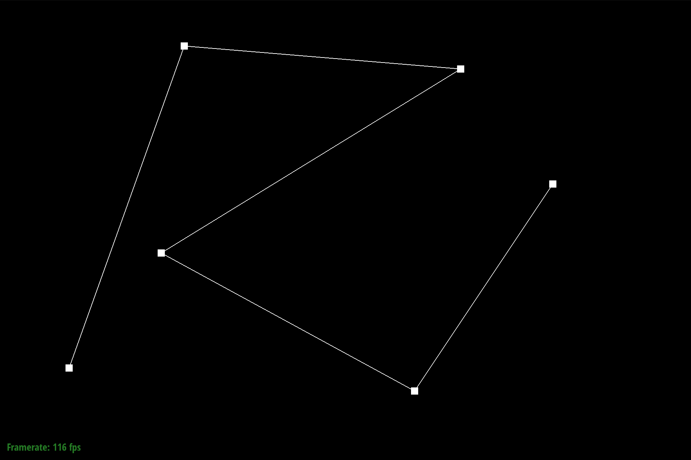 |
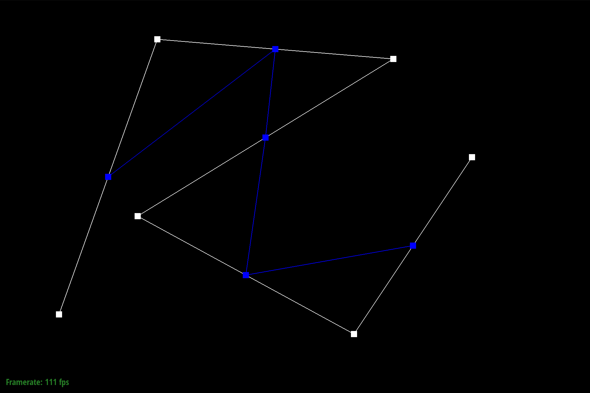 |
|
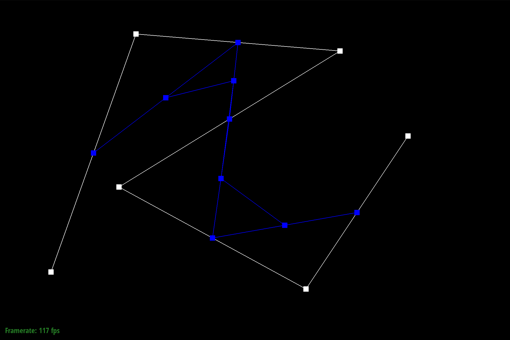 |
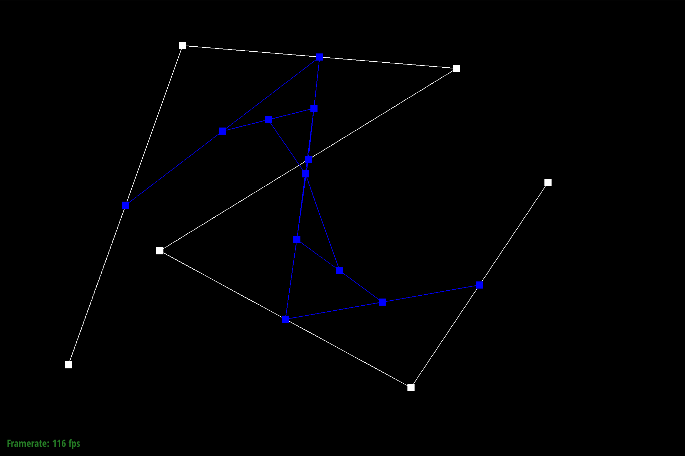 |
|
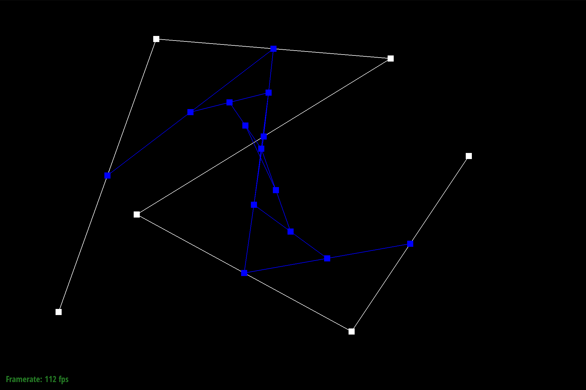 |
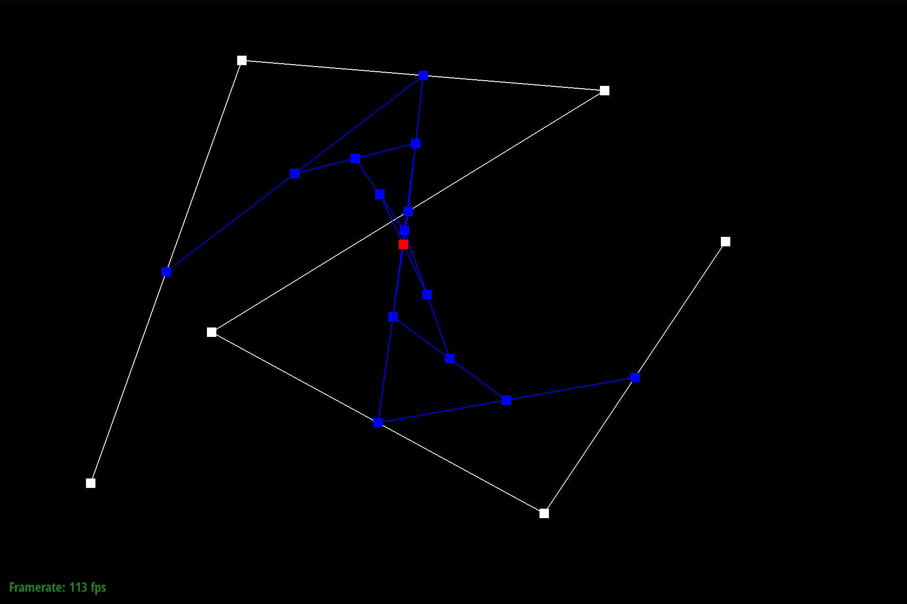 |
With the full curve toggled on using C, the red point from the last step sits right on it, as it should. Even though the control polygon crosses over itself, the curve
stays smooth. It starts and ends at the first and last control points and is only pulled toward the ones in between.
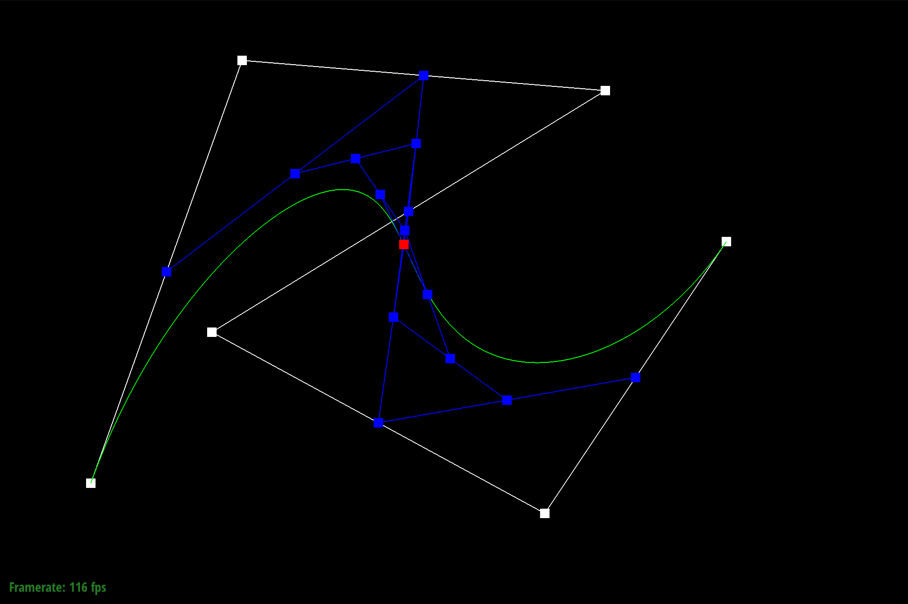
We then moved two of the middle control points (the second one up and to the right, the fourth one down and to the left) and scrolled to lower \(t\) to about 0.3. All the intermediate points shift with the change. The red point slides toward the start of the curve but stays on it, and the curve bends toward the control points' new positions while its endpoints stay put.
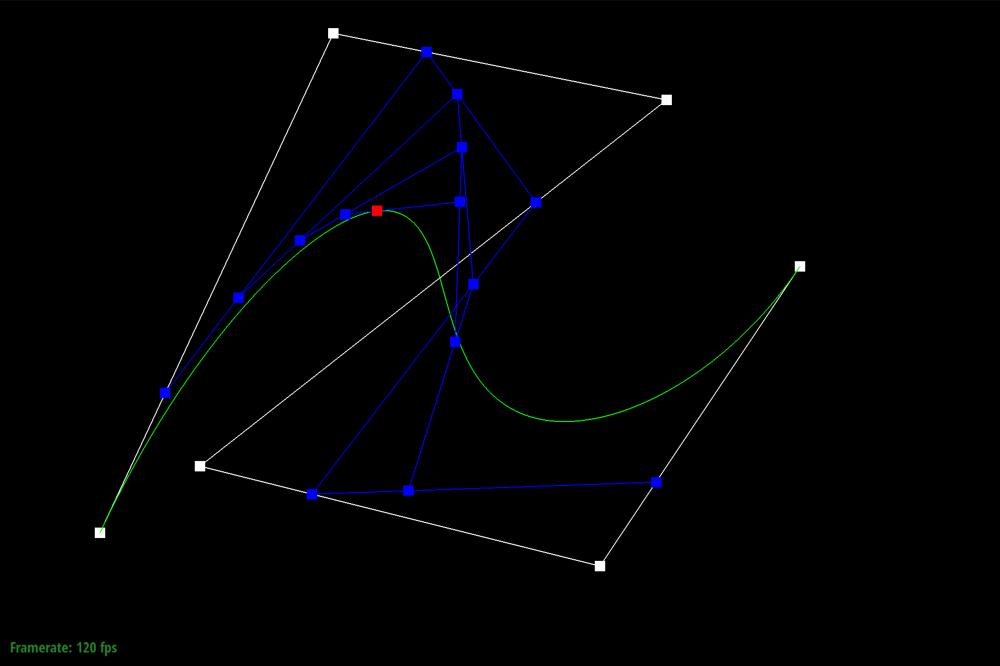
Part 2: Bezier surfaces with separable 1D de Casteljau
A Bezier surface takes an \(n \times n\) grid of control points and two parameters, \(u\) and \(v\). Each row of the grid is just a Bezier curve, so we can run the 1D algorithm along every row at parameter \(u\) and get one point per row. Those points then form a new Bezier curve of their own, and running the 1D algorithm on them at parameter \(v\) gives the one point \(P(u,v)\) that lies on the surface.
This turned into three small functions that build on each other. BezierPatch::evaluateStep is the same single-level lerp from Part 1, except it works on 3D points and
takes \(t\) as an argument instead of reading it from the class, since a patch needs both \(u\) and \(v\). evaluate1D copies the points and calls
evaluateStep in a loop until one point remains, and evaluate calls evaluate1D on each row with \(u\), collects those points, and calls it once
more with \(v\) on the result.
Here is bez/teapot.bez evaluated with our implementation.
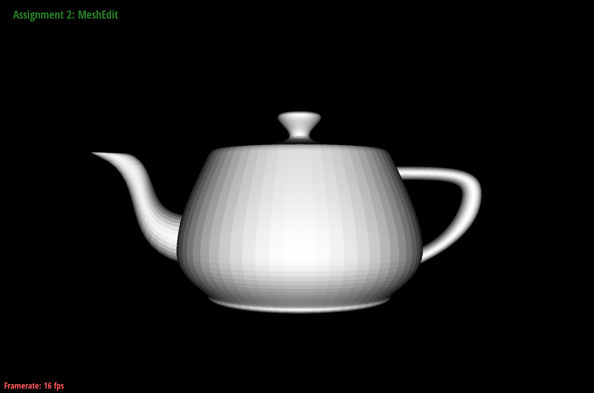
Section II: Triangle Meshes and Half-Edge Data Structure
Part 3: Area-weighted vertex normals
A triangle mesh only stores one flat normal per face, so shading it directly gives a faceted look where every triangle is visible. To make the surface look smooth, we compute a normal at each vertex by blending the normals of all the triangles that touch it. We weight each triangle's contribution by its area, so larger faces have more influence and the result depends on the shape of the surface rather than on how finely it happens to be triangulated.
We implemented this in Vertex::normal. Using the half-edge structure, we walk around the vertex with h = h->twin()->next(), which visits every face
touching the vertex. For each face we take the two edge vectors leaving the vertex and cross them, and since the length of that cross product is twice the triangle's area, we can just
add them all up and normalize at the end to get the vertex normal.
Below is dae/teapot.dae with flat shading and with our area-weighted smooth shading (toggled with Q). The faceted look is gone once we do this per-vertex
normal smoothing process.
|
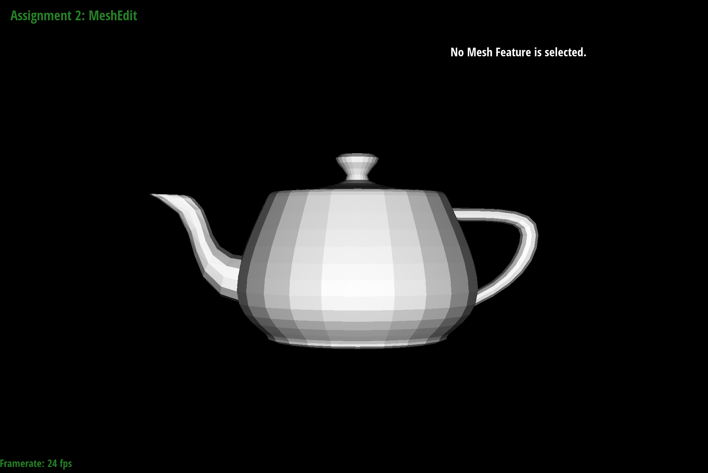 |
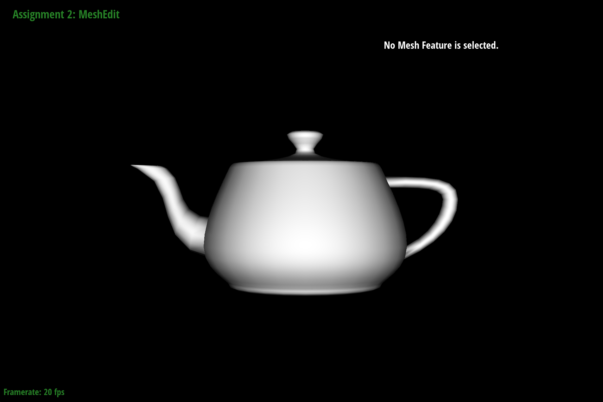 |
Part 4: Edge flip
An edge flip takes the two triangles that share an edge and swaps that edge so it connects the other two corners instead. This was one of the coolest things so far! It seems like such a small thing conceptually, and the logic can get confusing to keep track of with all the pointers, but the visual change was so unexpectedly drastic.
We implemented flipEdge by grabbing every element involved (half-edges, twins, vertices, edges, and faces) before changing anything, so our traversal wouldn't follow
pointers we had already reassigned. Then we used setNeighbors to rewire each half-edge and repointed every vertex, edge, and face, including the ones that didn't change
since it's easy to miss one. We also return early on boundary edges, which can't be flipped.
Below is the teapot before any flips and after flipping several edges.
|
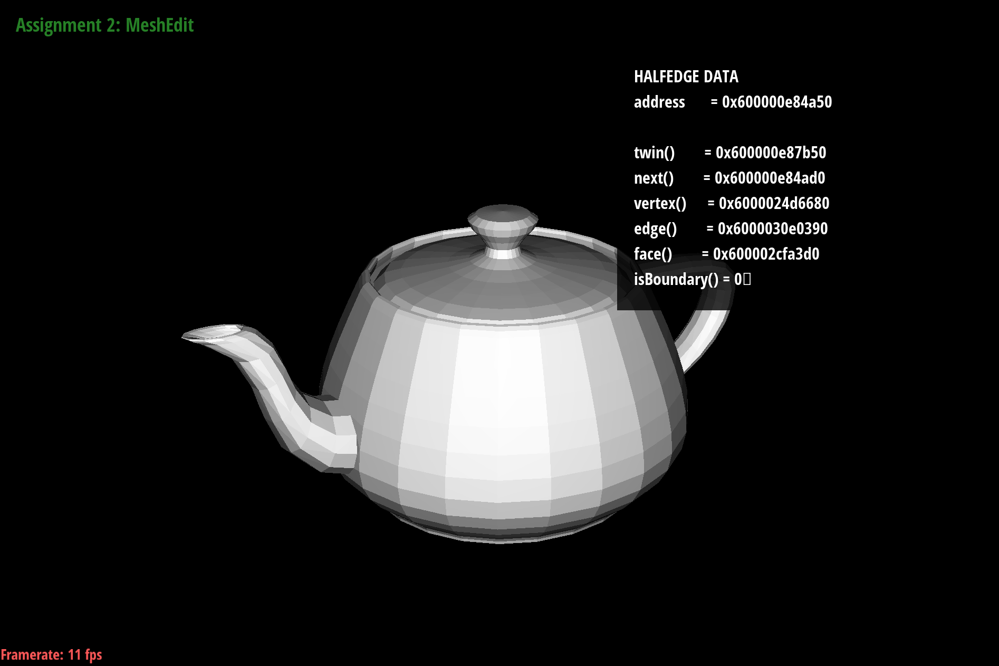 |
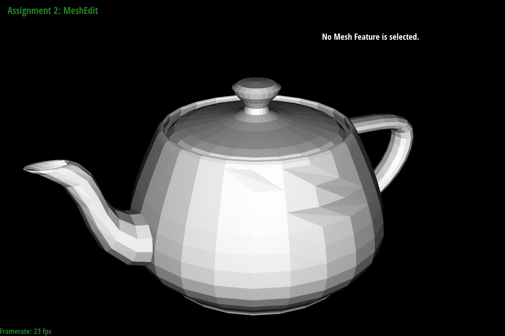 |
Our implementation worked without a major debugging journey. It was easy to forget a variable with so many pointers to keep track of, but naming the half-edges by the direction they point made it a lot harder to make mistakes and a lot easier to catch them when we did.
Part 5: Edge split
An edge split takes the two triangles that share an edge, adds a new vertex at the midpoint of that edge, and connects it to the two corners across from it, turning 2 triangles into 4. Unlike a flip, which only rearranges pointers, a split creates new elements: one vertex, three edges, two faces, and six half-edges. That means more pointers to keep track of, and it made split noticeably trickier than flip.
We followed the same approach as in Part 4. Before changing anything, we stored every half-edge, twin, vertex, edge, and face around the two triangles, so we would never read a pointer
we had already overwritten. We then created only the elements that didn't exist yet and reused the rest. The original edge becomes one half of the split edge, its two half-edges become
the half-edges from each endpoint to the new vertex m, and the two original faces become two of the four new triangles. Finally, we called setNeighbors on all
twelve half-edges, one triangle at a time, and repointed every vertex, edge, and face, including the ones that hadn't changed. The new vertex goes at the average of the two endpoints,
and its half-edge points along the original edge, which Part 6 relies on to tell old edges from new ones.
Like in Part 4, naming each half-edge by its direction (ab, ma, dm) made each setNeighbors line easy to check, since the name says
where the half-edge starts and where it points. Here is the cube before and after a few splits, and then after a mix of splits and flips.

|
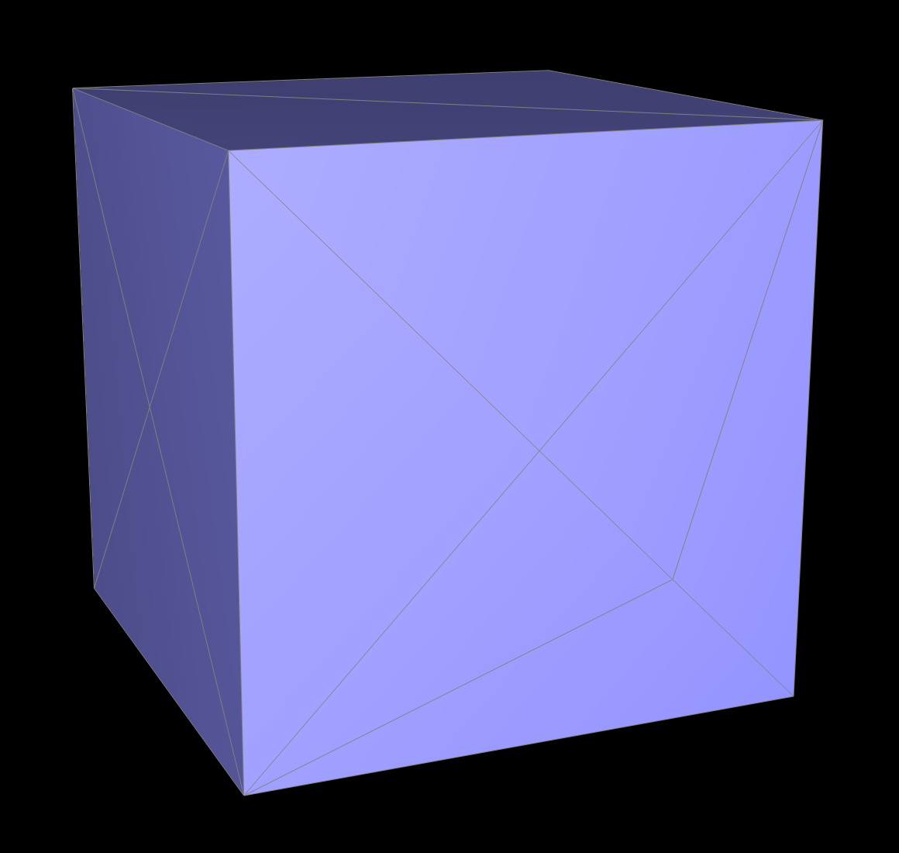 |
|
This part did come with a debugging journey, and it's a sneaky one. Splits looked right in the viewer and so did mixing them with flips, so we thought split was done. To be sure, we
wrote a small program that builds an octahedron and an icosahedron, splits every edge, and checks that every element points where it should. It reported three vertices whose half-edge
didn't actually start at them. We had written d->halfedge() = ad, but ad starts at \(a\), not \(d\), and the fix was to use db. Nothing on
screen showed the problem, because rendering only goes through faces and half-edges. But anything that walks around \(d\), like counting its neighbors or summing their positions, was
silently walking around \(a\) instead. A single round of Loop subdivision still looked fine, and only later rounds would have gone wrong. After this we checked that every vertex's
half-edge starts at that vertex after every operation, instead of trusting what the mesh looked like.
Extra credit: splitting boundary edges. On a boundary edge there is only one real triangle. The other side is the "virtual" face that represents the hole. So we split just that one triangle into two, and the hole's outline gains one extra half-edge, for 1 new vertex, 2 edges, 1 face, and 4 half-edges. The tricky part was keeping this constant-time. Inserting into the boundary loop normally means updating the half-edge that comes before the old one, and finding it would mean walking around the entire hole. Instead, we reuse the existing outer half-edge \(b \to a\) as \(b \to m\) and add a new \(m \to a\) after it. The half-edge before it still points to the right place, so we never have to find it. Flipping a boundary edge is still refused, because a flip needs two triangles to swap the diagonal between. The boundary splits are what make the hole-preserving subdivision in Part 6 possible; the beetle screenshots there show every boundary edge being split.
Part 6: Loop subdivision for mesh upsampling
Loop subdivision turns a coarse mesh into a finer, smoother one. We can't upsample a mesh the way we upsample an image, because image filtering assumes a regular grid, while mesh vertices sit at irregular positions and each one can have a different number of neighbors. Instead, each round of Loop subdivision splits every triangle into four by connecting its edge midpoints, then moves every vertex to a weighted average of the vertices around it. The original vertices move too, so Loop smooths the shape out rather than passing exactly through the original points. Repeating it converges to a smooth surface.
We followed the recommended three steps: compute all the new positions on the original mesh, then change the mesh's connectivity, then move every vertex to its new position. Computing
first matters because every formula has to use the original positions. If we moved vertices as we went, later vertices would be averaging neighbors that had already moved, and
the result would depend on the order we visited them in. So the results go into Vertex::newPosition and Edge::newPosition, and position isn't
touched until the very end.
For each original vertex we walk around it once, with the same h = h->twin()->next() loop from Part 3, to sum its neighbors and count them. Its new position is \((1
- nu) \cdot \text{original} + u \cdot \text{neighbor sum}\), where \(u = 3/16\) when \(n = 3\) and \(3/(8n)\) otherwise. We count \(n\) during the walk instead of calling
degree(), because degree() counts faces, and at a vertex on the edge of a hole that is one less than the number of edges. For each edge, the vertex that will
be inserted there gets \(\frac{3}{8}(A + B) + \frac{1}{8}(C + D)\). Here \(A\) and \(B\) are the edge's endpoints and \(C\) and \(D\) are the corners across from it on each side, which
we find with h->next()->next()->vertex().
To change the connectivity, we split every original edge and then flip the right new ones. The catch is that splitting adds new edges to the same list we're looping over, so a naive
loop would keep splitting the new edges forever. We record nEdges() up front and split exactly that many edges. New edges get added to the end of the list, so the loop
never reaches them, and we save the next iterator before each split. After each split we mark the new vertex as new and walk around it. The two edges going back to the original
endpoints are halves of the old edge, so they stay old, while the two edges cutting across the old triangles are new. Then we flip every new edge that connects an old vertex to a new
one. This leaves the halves of old edges alone, because they already form the outside of the four new triangles, and it leaves alone the new edges between two new vertices, because
they form the middle triangle.
To make sure it was right, we checked that every round gives exactly \(V + E\) vertices, \(2E + 3F\) edges, and \(4F\) faces, all triangles. We also checked that old vertices keep
their number of neighbors, that every new vertex in the interior has exactly 6, and that the final positions match the formulas computed separately. We ran it on every
.dae in the project, including the 32,000-vertex beast.dae.
Watching meshes subdivide, the most obvious effect is that sharp corners and edges get rounded off and the whole shape shrinks. That makes sense, since every vertex is replaced by an
average of itself and its neighbors, and averaging is exactly what wipes out sharp detail. On cube.dae, the corners start \(\sqrt{3} \approx 1.73\) away from the center.
After four rounds they are only 0.87 to 1.04 away and the faces have pulled in to about 0.87, so the cube has basically become a blob. Pre-splitting the edges near a corner reduces
this: the extra vertices mean the averaging pulls the corner in less. After three rounds, the farthest corner sat 1.04 from the center with no pre-splits, and about 1.36, 1.62, and
1.76 after one, two, and three rounds of splitting the edges around each corner. The order of those splits matters, though. Splitting in an uneven order gives an uneven triangulation,
and the corners sharpen unevenly too.
The cube also becomes lopsided as it subdivides, which you can see in the top row below. The reason is how it was triangulated. Each square face is cut into two triangles by a single diagonal, and those diagonals don't run in a symmetric pattern around the cube, so the eight corners end up with 3, 4, 4, 4, 5, 5, 5, and 6 neighbors. Loop's weights depend on the number of neighbors, so corners that are geometrically identical get moved by different amounts. After four rounds, different corners sat anywhere from 0.87 to 1.04 from the center. To fix this, we split all six face diagonals before subdividing (bottom row). Each face then becomes four triangles meeting at its center, every corner has exactly 6 neighbors, and every face center has 4, so the algorithm sees every corner and every face the same way. After four rounds the corners are all exactly the same distance from the center, at 1.16, which is also farther out than before, so the pre-split cube shrinks less too.
|
|
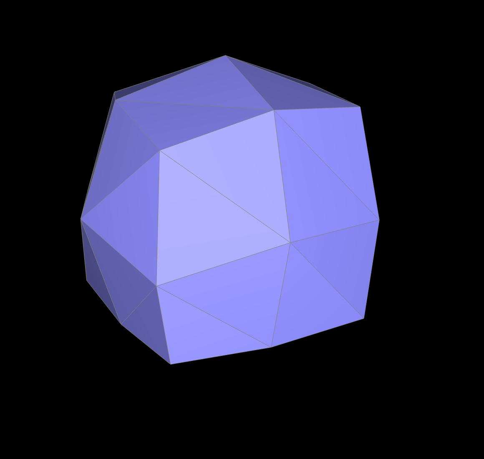 |
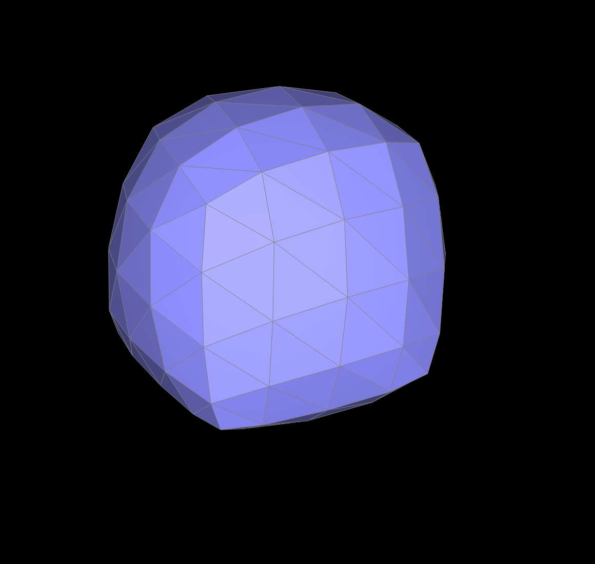 |
|
|
|
|
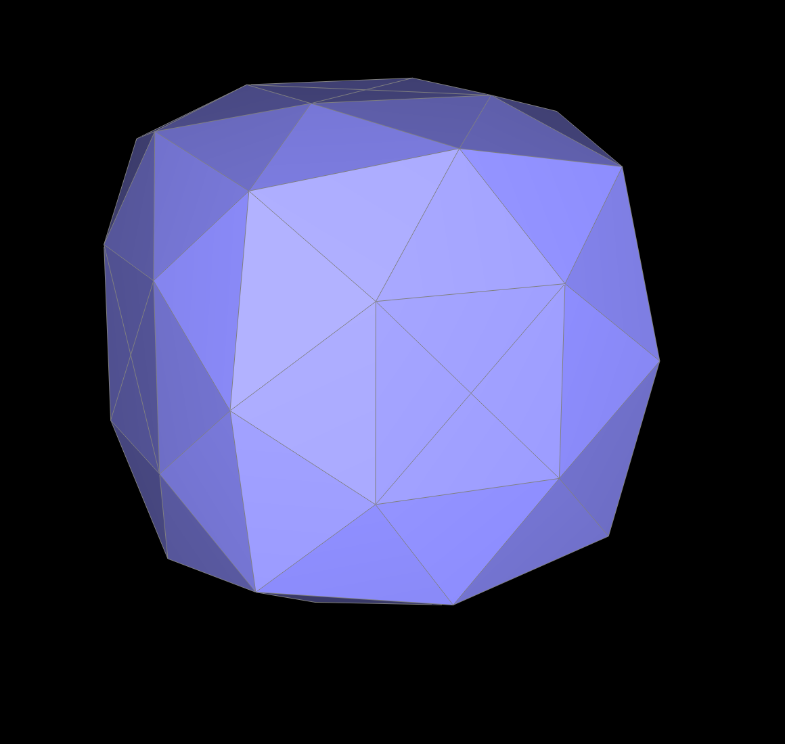 |
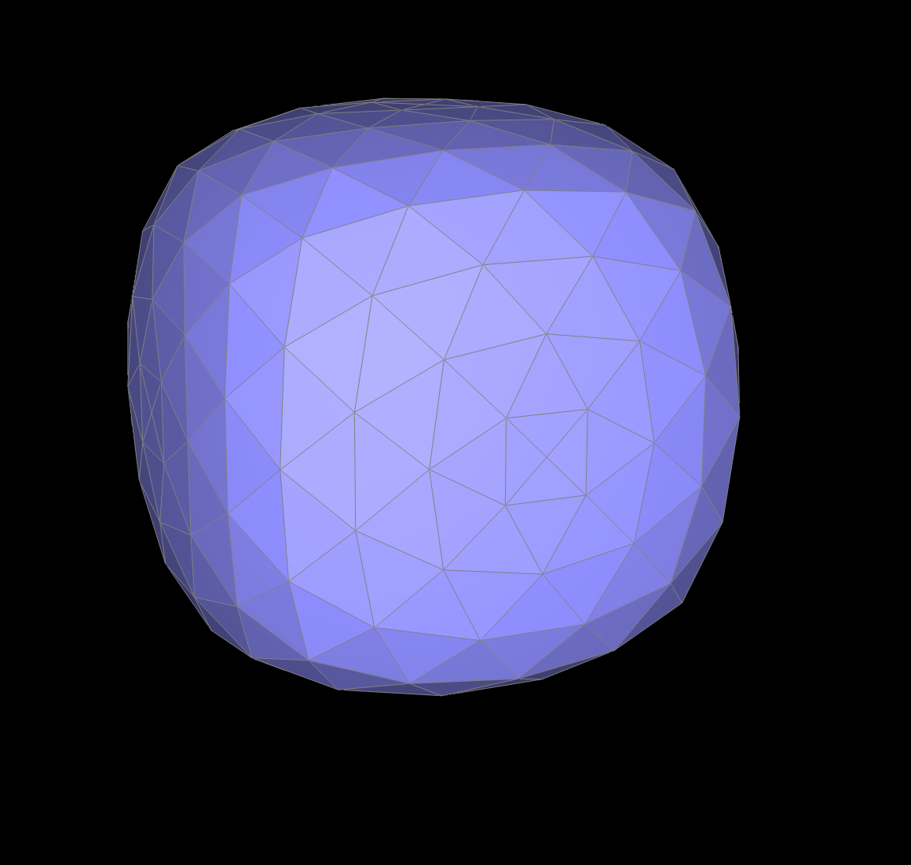 |
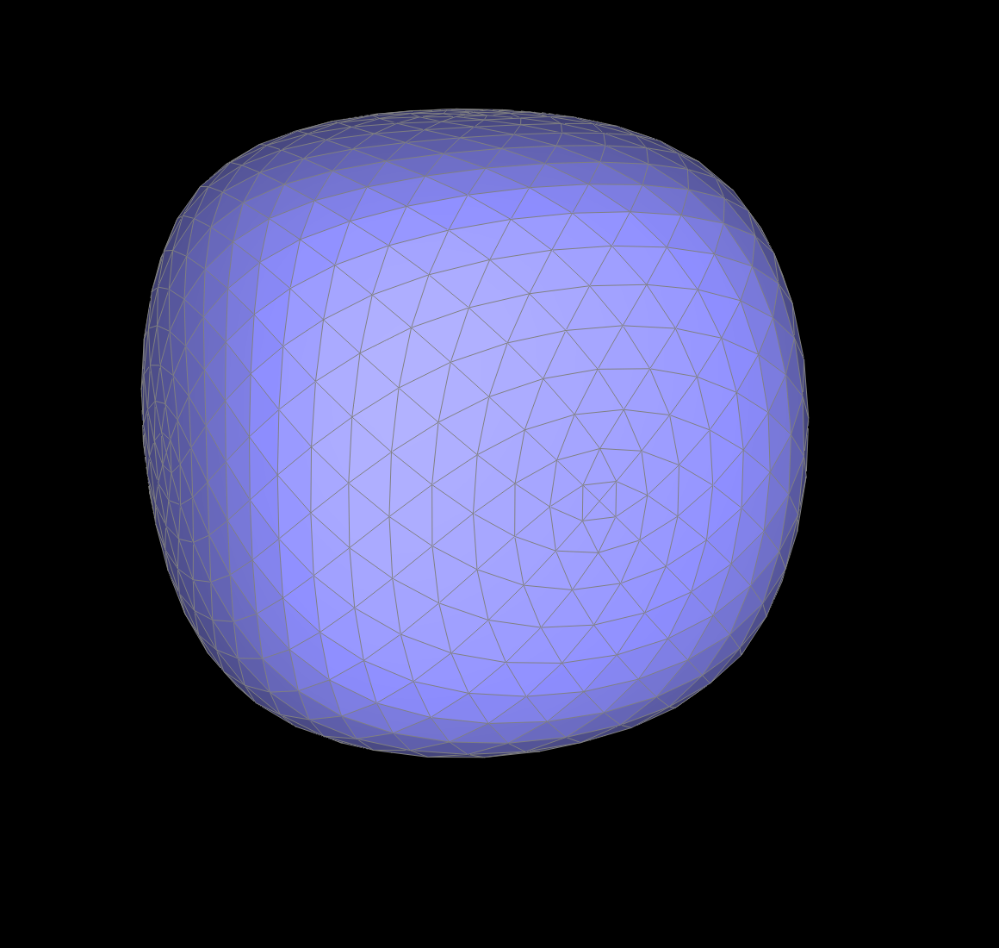 |
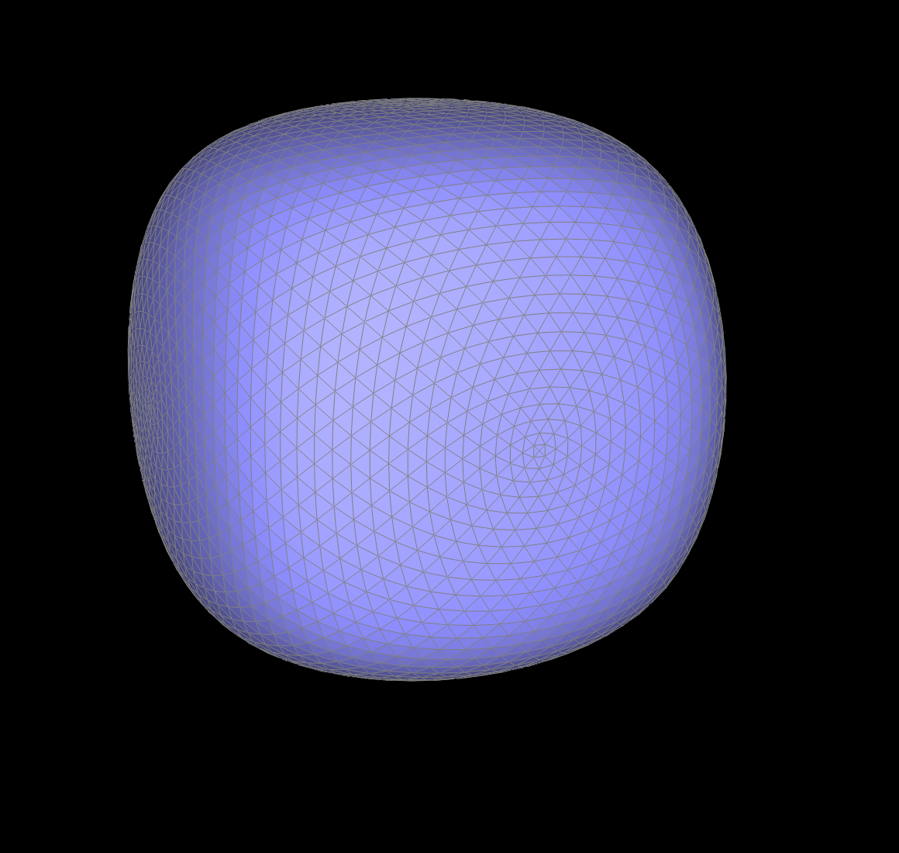 |
Extra credit: meshes with boundaries. A vertex on the edge of a hole only has neighbors on one side, so the normal rule pulls it toward the inside of the mesh and distorts the
hole. Using the boundary splits from Part 5, we gave boundary edges and vertices their own rules from A Survey of Subdivision-Based Tools for Surface Modeling. A new vertex on a
boundary edge goes at the plain midpoint \(\frac{1}{2}(A + B)\), and a boundary vertex moves to \(\frac{3}{4} v + \frac{1}{8}(v_\text{prev} + v_\text{next})\), using only its two
neighbors along the boundary. This way the outline of each hole gets smoothed as a curve of its own, independent of the rest of the mesh. Flip didn't need any changes, since the edges
we flip are never on a boundary. Below is beetle.dae, which has 11 holes (the windows and headlights), before and after one round. The holes stay open and their edges come
out smooth.
|
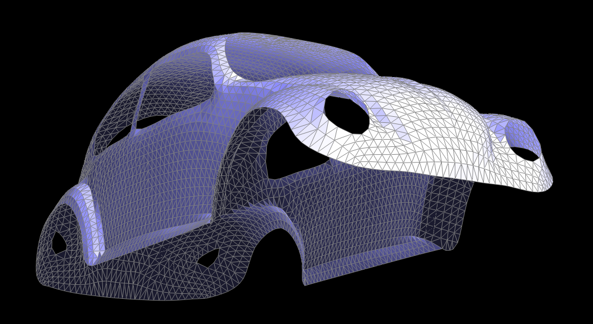 |
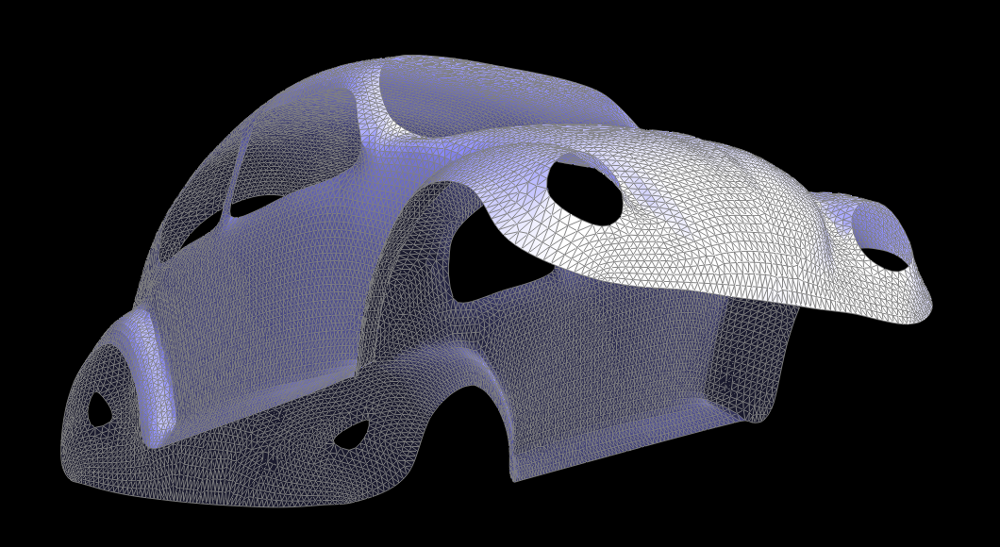 |
Extra credit: modified Butterfly subdivision. For a second scheme we implemented modified Butterfly, on the B key. It splits triangles the same way Loop does, so we
moved the split-and-flip step into a shared helper, and the two schemes only differ in how they compute positions. Butterfly is the opposite kind of scheme: the original vertices never
move, and only the new edge vertices get computed. When both ends of an edge have exactly 6 neighbors, the new vertex is \(\frac{1}{2}(a + b) + \frac{1}{8}(c + d) - \frac{1}{16}\)
times the sum of the four vertices across the triangles' outer edges. When an end has some other number of neighbors \(k\), we use Zorin's weights around that vertex instead:
\(\frac{3}{4} v + \sum_j s_j v_j\), with \(s_j = \frac{1}{k}\left(\frac{1}{4} + \cos\frac{2\pi j}{k} + \frac{1}{2}\cos\frac{4\pi j}{k}\right)\) for \(k \ge 5\) and special-case weights
for \(k = 3\) and \(k = 4\). If both ends are irregular, we average the two. Edges on a boundary use the four-point rule \(\frac{9}{16}(a + b) - \frac{1}{16}(a' + b')\). One
limitation: an interior edge whose two ends are both on a boundary falls back to Loop's rule, since neither end has a full ring of neighbors to apply the weights to.
To check it, we confirmed that the original vertices come out exactly unchanged, that flat meshes stay flat, and that in a flat fan of 3, 4, 5, 7, or 8 triangles each new vertex lands exactly halfway along its edge, which confirms the special-case weights. The difference from Loop is easiest to see on the cube. Loop shrinks it, but Butterfly keeps the corners where they are and its negative weights make the faces bulge outward instead.
|
|
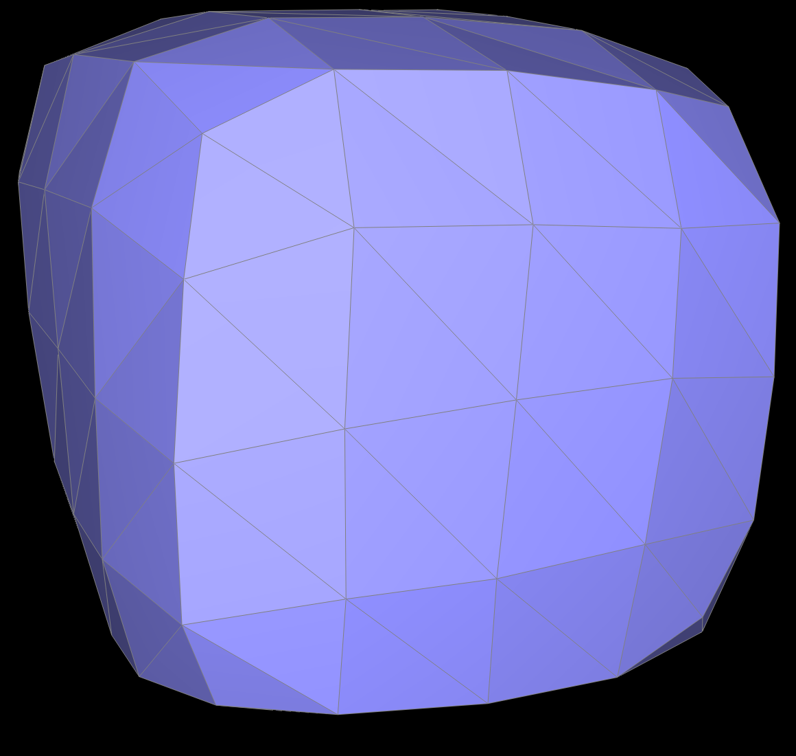 |
(Optional) Section III: Potential Extra Credit - Art Competition: Model something Creative
For the art competition we made an octopus, saved asdocs/artcompetition.dae. Instead of modeling it by hand in Blender, we generated it with a script, which the spec lists as
one of the creative options. An octopus seemed like a good fit for subdivision, since a blocky low-poly shape turns into a smooth, rounded body, and the curling tentacles are easy to
describe as a rule repeated over and over.
The body starts as a cube with a 3×3 grid of squares on each side. Every vertex gets pulled most of the way toward a sphere, the top is stretched upward and tilted back into a tall head, and the bottom is squashed. The 3×3 grid on the bottom has exactly eight outer squares, so a tentacle grows from each one. Each tentacle is sixteen extrusions in a row. Every step moves the end forward, shrinks it a little, and rotates it by a slightly larger angle than the step before, so the tentacle droops down and out and then curls into a spiral at the tip. Each tentacle curls a little more or less than its neighbors and twists the opposite way, so they don't look copy-pasted. The eyes are three extrusions each (a bulge, a rim, and a pupil pushed back in), and the mouth is the center square on the bottom pushed inward. Since every face is a square, we split each one into four triangles around its center instead of along one diagonal, which is exactly what we found in Part 6 makes subdivision come out symmetric. The final mesh has 1,190 vertices and 2,376 triangles, and has no holes.
We also wrote a custom shader for it in the empty extra-credit slot of the fragment shader (the 2 key in shader mode). It reflects the surroundings using the provided
environment map, gives the surface a coral color that gets darker where it faces away from the camera, and adds a light-blue glow along the edges of the silhouette, like wet skin
underwater. We used it together with our area-weighted vertex normals from Part 3 so the subdivided surface looks smooth.
Before subdivision it's clearly a blocky model: you can see the grid on the head, the flat sides of the tentacles, and the square eye sockets. After one round the head becomes a dome, the tentacles become round tubes, and the eyes soften into bulges. After two rounds it looks smooth and organic, and the tentacle tips curl into clean spirals because there are so many extrusions packed in there. As Part 6 predicts, sharp details like the eye rims soften with each round, so we made them deeper than they needed to be at the start.
|
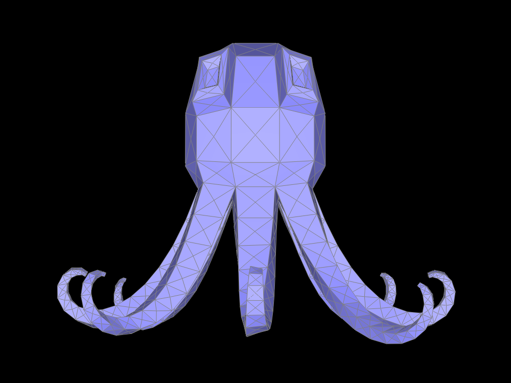 |
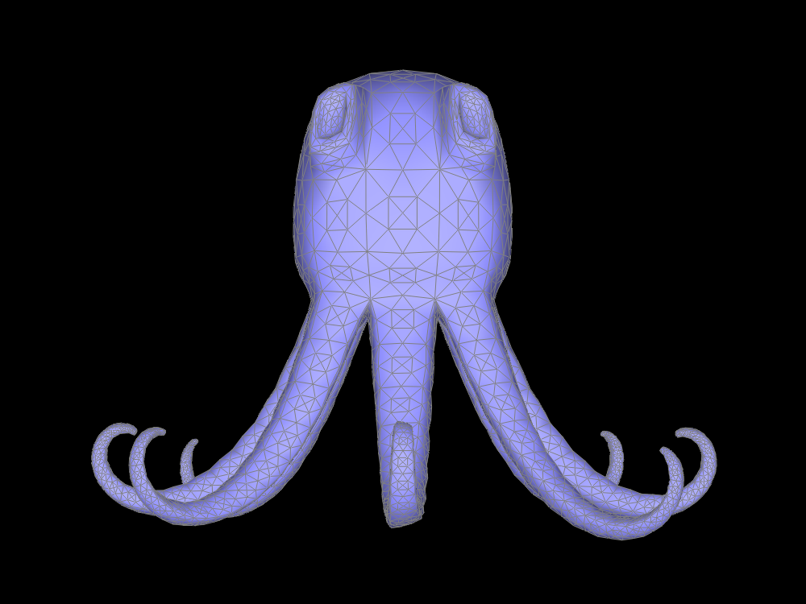 |
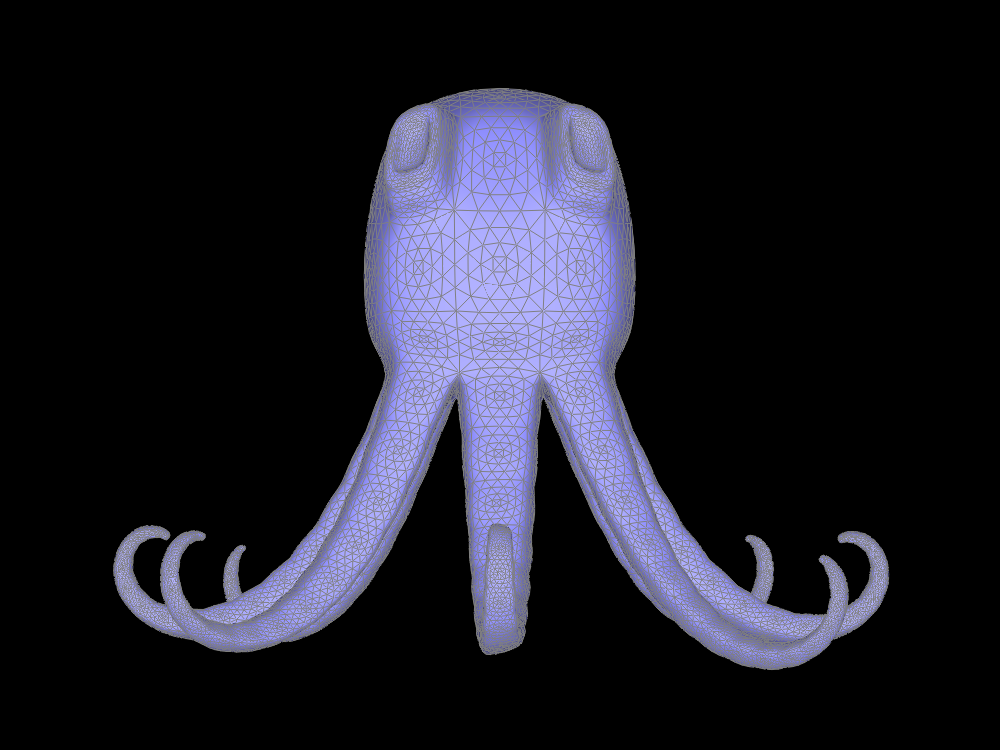 |
|
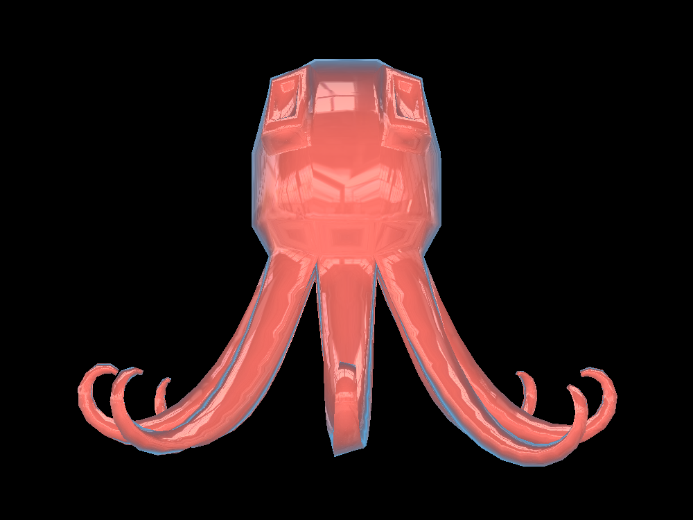 |
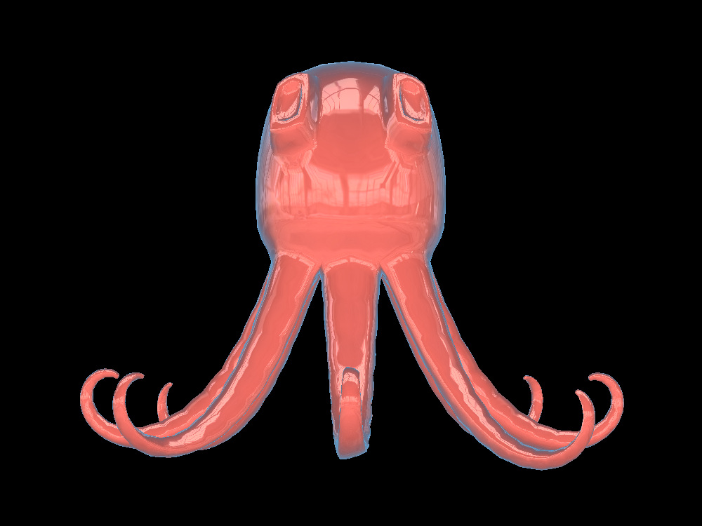 |
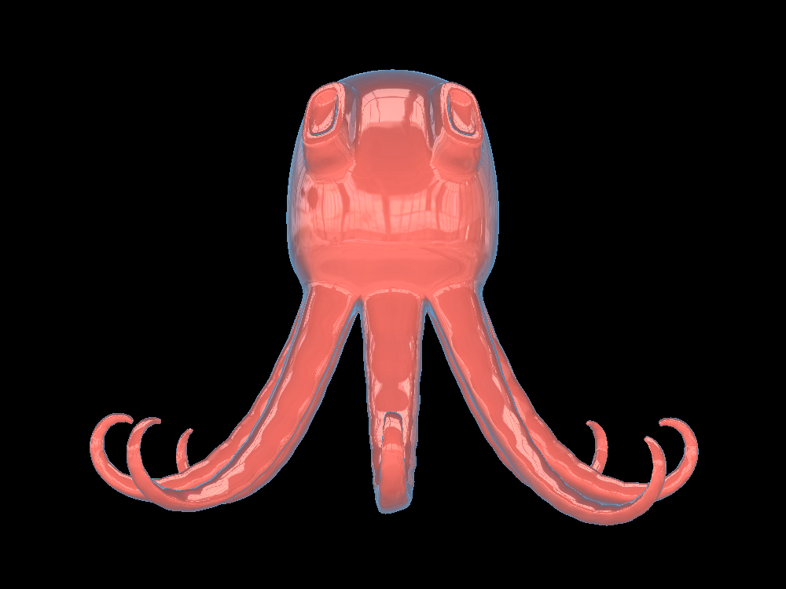 |